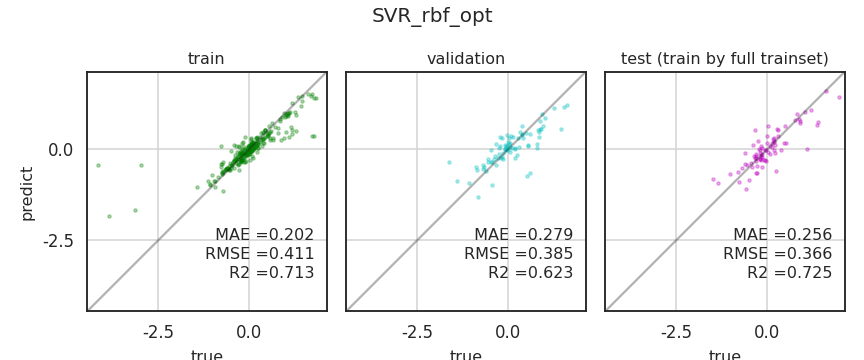

- 데이터 불균형으로 인해 train, validation, test dataset의 결과가 따로 놉니다.
- 층화추출로 데이터를 최대한 균등하게 분할합시다.
- hyperparameter도 라이브러리를 사용해 편리하게 피팅합시다.
6. Validation set 고정
- 새로운 노트북을 만들어 데이터를 불러옵니다.
1
2
3
4
5
6
7
8
9
10
11
12
13
14
15%matplotlib inline
import numpy as np
import pandas as pd
import matplotlib as mpl
import matplotlib.pyplot as plt
import seaborn as sns
sns.set_context("talk")
sns.set_style("white")
sns.set_palette("Pastel1")
# 데이터 불러오기
df_vcv = pd.read_csv("df_vcv.csv")
df_vcv.head()
6.1. 랜덤추출
이번엔 index를 사용하지 않고 데이터를 분할합니다.
편하게 sklearn의
train_test_split()을 사용합니다.1
2
3
4
5
6
7
8
9
10from sklearn.model_selection import train_test_split
# data split
df_trainval, df_test = train_test_split(df_vcv, test_size=0.2, random_state=42)
df_train, df_val = train_test_split(df_trainval, train_size=0.75, random_state=42)
# index
idx_train = df_train.index
idx_val = df_val.index
idx_test = df_test.index데이터가 잘 분할되었는지 확인합니다.
지난번 글에 있는 코드를 고쳐서 train, validation, test set의 분포를 그립니다.
코드가 길어서 접어두었습니다. 클릭하면 펴집니다.
코드 보기/접기
1
2
3
4
5
6
7
8
9
10
11
12
13
14
15
16
17
18
19
20
21
22
23
24
25
26
27
28
29
30
31
32
33
34
35
36
37
38
39
40
41
42
43
44
45
46
47
48
49def plot_distribution(df, idx_train, idx_val, idx_test, filename):
fig, axes = plt.subplots(ncols=3, nrows=2, figsize=(12, 8))
axs = axes.ravel()
for ax, col in zip(axs, df.columns):
if col != "target":
if df[col].dtype == "O": # categorical
df_train = df.loc[idx_train, col].value_counts().reset_index()
df_val = df.loc[idx_val, col].value_counts().reset_index()
df_test = df.loc[idx_test, col].value_counts().reset_index()
width_cat = 0.8/3
ax.bar(df_train.index-width_cat, df_train[col]/len(idx_train), width=width_cat, ec="g", fc="#AAFFAADD")
ax.bar(df_val.index, df_val[col]/len(idx_val), width=width_cat, ec="c", fc="#AAFFFFDD")
ax.bar(df_test.index+width_cat, df_test[col]/len(idx_test), width=width_cat, ec="m", fc="#FFAAFFDD")
ax.set_xticks(list(range(df_train.shape[0])))
ax.set_xticklabels(df_train["index"].values)
else: # numerical
bins = np.linspace(df[col].min(), df[col].max(), 10)
bins_center = (bins[:-1] + bins[1:])/2
bins_delta = bins[1] - bins[0]
counts_train, bins_train = np.histogram(df.loc[idx_train, col], bins=bins)
counts_val, bins_val = np.histogram(df.loc[idx_val, col], bins=bins)
counts_test, bins_test = np.histogram(df.loc[idx_test, col], bins=bins)
width_num = bins_delta/3
ax.bar(bins_center-width_num, counts_train/len(idx_train), width=width_num, ec="g", fc="#AAFFAADD")
ax.bar(bins_center, counts_val/len(idx_val), width=width_num, ec="g", fc="#AAFFFFDD")
ax.bar(bins_center+width_num, counts_test/len(idx_test), width=width_num, ec="m", fc="#FFAAFFDD")
else:
sns.kdeplot(df.loc[idx_train, col], color="g", fill=True, ax=ax, label="train")
sns.kdeplot(df.loc[idx_val, col], color="c", fill=True, ax=ax, label="val.")
sns.kdeplot(df.loc[idx_test, col], color="m", fill=True, ax=ax, label="test")
ax.set_ylabel("")
if col in ["A", "D"]:
coltype = "categorical"
else:
coltype = "numerical"
ax.set_title(f"{col} ({coltype})", pad=12)
handles, labels = axs[5].get_legend_handles_labels()
axs[2].legend(handles, labels, loc="upper left", bbox_to_anchor=(1,0.9))
fig.tight_layout()
fig.set_facecolor("w")
fig.savefig(filename)
- matplotlib은 bar plot을 나란히 놓기가 영 성가신 것이 사실입니다.
1 | plot_distribution(df_vcv, idx_train, idx_val, idx_test, "68_vcv_1.png") |
- categorical은 그나마 좀 나은데 numerical들이 울퉁불퉁합니다.
- 이 데이터들을 최대한 균등하게 나누어 봅시다.
6.2. 층화추출: stratified sampling
층화추출은
train_test_split()에stratify=매개변수를 넣으면 됩니다.1
2
3# stratify split fail
df_trainval, df_test = train_test_split(df_vcv, test_size=0.2, random_state=42,
stratify=df_vcv[["B", "C", "E"]])그런데 에러가 납니다.
- 층화추출은 데이터의 종류에 따라 경우의 수가 결정됩니다.
- B x C x E = 5 x 5 x 4 = 100개는 되어야 하는데,
- test dataset이 400 x 0.2 = 80개밖에 안됩니다.
- 욕심을 줄이고 B와 C에만 층화추출을 적용합니다.
- 1차로 train + val : test set을 8:2로 나누고
- 2차로 train : val 을 3:1로 나눕니다.
- 최종적으로 train : val : test = 3 : 1 : 1 로 나눕니다.
1
2
3
4
5
6
7
8
9
10
11
12
13# stratify split success
df_trainval, df_test = train_test_split(df_vcv, test_size=0.2, random_state=42,
stratify=df_vcv[["B", "C"]])
df_train, df_val = train_test_split(df_trainval, train_size=0.75, random_state=42,
stratify=df_trainval[["B", "C"]])
# index
idx_train = df_train.index
idx_val = df_val.index
idx_test = df_test.index
# visualization
plot_distribution(df_vcv, idx_train, idx_val, idx_test, "68_vcv_2.png")
- 분포가 한결 균일해집니다.
6.3. 더 층화추출
- B와 C에 비해 E가 덜 균일한 것이 영 아쉽습니다.
- B를 절반으로 나누어서라도 층화추출을 적용해 봅니다.
- E의 범위를 측정해서 절반으로 자릅니다
np.quantile()을 사용합니다.1
2
3
4
5
6
7
8
9# quantizing E
qbins = np.quantile(df_vcv["E"], np.linspace(0, 1, 3))
qbins[0] = -np.inf
qbins[-1] = np.inf
print(qbins)
qlabels = np.arange(2)
print(qlabels)- 실행결과 :
1
2[-inf 2.5 inf]
[0 1]
- 실행결과 :
- 2.5를 중심으로 나눈 기준을 이용해 0과 1로 인코딩을 합니다.
pd.cut()을 사용합니다.1
2df_vcv["E_cat"] = pd.cut(df_vcv["E"], bins=qbins, labels=qlabels)
df_vcv.head()
- B, C에 E_cat까지 이용해 나눕니다.
- 실제 사용할 데이터가 아니더라도 층화추출에 적용할 수 있습니다.
1
2
3
4
5
6
7
8
9
10
11
12
13# stratify split success
df_trainval, df_test = train_test_split(df_vcv, test_size=0.2, random_state=42,
stratify=df_vcv[["B", "C", "E_cat"]])
df_train, df_val = train_test_split(df_trainval, train_size=0.75, random_state=42,
stratify=df_trainval[["B", "C", "E_cat"]])
# index
idx_train = df_train.index
idx_val = df_val.index
idx_test = df_test.index
# visualization
plot_distribution(df_vcv, idx_train, idx_val, idx_test, "68_vcv_3.png")
- 왠지 오히려 더 안좋습니다.
- 아까 나누었던 B, C 층화추출을 채택하고, train, val, test set을 만듭니다.
1
2
3
4
5
6
7
8
9
10
11
12
13
14
15
16
17# stratify split success
df_trainval, df_test = train_test_split(df_vcv, test_size=0.2, random_state=42,
stratify=df_vcv[["B", "C"]])
df_train, df_val = train_test_split(df_trainval, train_size=0.75, random_state=42,
stratify=df_trainval[["B", "C"]])
# index
idx_train = df_train.index
idx_val = df_val.index
idx_test = df_test.index
# dataset
X = df_vcv[["A", "B", "C", "D", "E"]]
y = df_vcv["target"]
X_train, X_val, X_test = X.loc[idx_train], X.loc[idx_val], X.loc[idx_test]
y_train, y_val, y_test = y[idx_train], y[idx_val], y[idx_test]
7. 머신러닝
7.1. 사전 준비
- 지난 글까지와 달리 이번 글에서는 고정된 validation set을 사용합니다.
- 한편 hyperparameter는 이것저것 바꿔 넣을 것입니다.
- 사용된 함수들을 일부 수정합니다. 자세한 설명은 생략합니다.
7.1.1. pipeline
- 파이프라인을 구축합니다.
- 학습과 예측에 필요한 데이터와 하이퍼파라미터만 넣으면 되도록 만듭니다.
코드 보기/접기
1
2
3
4
5
6
7
8
9
10
11
12
13
14
15
16
17
18
19
20
21
22
23
24
25
26
27
28
29
30
31
32
33
34
35
36
37
38
39
40
41
42
43
44
45
46
47# encoder
from sklearn.preprocessing import OneHotEncoder
# machine learning models
from sklearn.preprocessing import StandardScaler
from sklearn.preprocessing import PolynomialFeatures
# pipeline
from sklearn.pipeline import Pipeline
from sklearn.compose import ColumnTransformer
# machine learning models
from sklearn.svm import SVR
from sklearn.kernel_ridge import KernelRidge
from sklearn.neighbors import KNeighborsRegressor
def get_model(method="svr", param=None):
# categorical and numerical features
cat_features = ["A", "D"]
cat_transformer = OneHotEncoder(sparse=False)
num_features = ["B", "C", "E"]
num_transformer = Pipeline(steps=[("scaler", StandardScaler()),
("polynomial", PolynomialFeatures(include_bias=True))])
# preprocessor
preprocessor = ColumnTransformer(transformers=[("num", num_transformer, num_features),
("cat", cat_transformer, cat_features)
])
# modeling
if method == "svr":
model = Pipeline(steps=[("preprocessor", preprocessor),
("svr", SVR())
])
elif method == "kridge":
model = Pipeline(steps=[("preprocessor", preprocessor),
("kridge", KernelRidge())
])
elif method == "knr":
model = Pipeline(steps=[("preprocessor", preprocessor),
("knr", KNeighborsRegressor())
])
model.set_params(**param)
return model
- 예제 hyperparameter를 입력해서 모델이 잘 생성되는지 확인합니다.
1
2
3
4
5
6
7
8
9
10
11
12
13
14# example: svr
# hyperparameter
param = {'preprocessor__num__polynomial__degree': 3,
'svr__kernel': 'rbf', 'svr__C': 100, 'svr__gamma': 0.01}
# model
model = get_model(method="svr", param=param)
# visualize
from sklearn import set_config
set_config(display='diagram')
display(model)
7.1.2. evaluation
- 모델 평가를 위한 함수를 마련합니다.
1
2
3
4
5
6
7
8
9
10
11
12
13
14
15
16
17
18# evaluation metrics
from sklearn.metrics import mean_absolute_error as mae_
from sklearn.metrics import mean_squared_error as mse_
from sklearn.metrics import r2_score as r2_
def get_metrics(model, X, y):
y_pred = model.predict(X)
mae = mae_(y, y_pred)
rmse = mse_(y, y_pred, squared=False)
r2 = r2_(y, y_pred)
return y_pred, mae, rmse, r2
model.fit(X_train, y_train)
y_pred_val, mae_val, rmse_val, r2_val = get_metrics(model, X_val, y_val)
print(f"# mae_val : {mae_val:.3f}")
print(f"# rmse_val : {rmse_val:.3f}")
print(f"# r2_val : {r2_val:.3f}")- 실행 결과 :
1
2
3# mae_val : 0.296
# rmse_val : 0.437
# r2_val : 0.513
- 실행 결과 :
7.1.3. parity plots
- 평가 결과를 scatter plot과 함께 시각화하는 함수를 만듭니다.
- 지난 글에 있던 코드를 수정해서 확장성을 높였습니다.
- tran & val만 볼 수도, train & val & test도 가능합니다.
코드 보기/접기
1
2
3
4
5
6
7
8
9
10
11
12
13
14
15
16
17
18
19
20
21
22
23
24
25
26
27
28
29
30
31
32
33
34
35
36
37
38
39
40
41
42
43
44
45
46
47
48
49
50
51
52
53
54
55
56
57
58
59
60
61
62
63
64
65
66
67
68
69
70
71
72
73
74
75
76
77
78
79
80
81
82
83
84
85
86
87
88
89
90
91
92
93
94
95
96
97
98
99
100
101
102
103
104
105
106
107
108
109
110
111
112
113
114
115
116
117
118
119
120# single parity plot
def plot_parity(true, predict, c="c", mae=None, rmse=None, r2=None,
equal=True, title=None, xlabel="true", ylabel="predict", ax=None):
# if axes not defined, create one.
if not ax:
fig, ax = plt.subplots(figsize=(4, 4))
# scatter plot
ax.scatter(true, predict, c=c, s=10, alpha=0.3)
# x, y limits
min_ = min(ax.get_xbound()[0], ax.get_ybound()[0])
max_ = max(ax.get_xbound()[1], ax.get_ybound()[1])
ax.set_xlim(min_, max_)
ax.set_ylim(min_, max_)
# x, y ticks
lb, ub = ax.get_ybound()
ticks =[x for x in ax.get_xticks() if x >= lb and x <= ub]
ax.set_xticks(ticks)
ax.set_xticklabels(ticks)
ax.set_yticks(ticks)
ax.set_yticklabels(ticks)
# grids
ax.set_aspect("equal")
ax.grid(axis="both", c="lightgray")
if equal:
ax.plot([lb, ub], [lb, ub], c="k", alpha=0.3)
# x, y labels and title
ax.set_xlabel(xlabel, fontsize=16, labelpad=8)
ax.set_ylabel(ylabel, fontsize=16, labelpad=8)
ax.set_title(title, fontsize=16, pad=8)
# metrics
if mae:
ax.text(0.95, 0.3, f" MAE ={mae:0.3f}",
transform=ax.transAxes, fontsize=16, ha="right")
if rmse:
ax.text(0.95, 0.22, f"RMSE ={rmse:0.3f}",
transform=ax.transAxes, fontsize=16, ha="right")
if r2:
ax.text(0.95, 0.14, f"R2 ={r2:0.3f}",
transform=ax.transAxes, fontsize=16, ha="right")
return ax
# multiple parity plots
def plot_parities(model, X_train, y_train, X_val=None, y_val=None, X_test=None, y_test=None, title=None, train=False):
# validataion and test
vis_val = False
if (X_val is not None) and (y_val is not None):
vis_val = True
vis_test = False
if (X_test is not None) and (y_test is not None):
vis_test = True
# train
if train:
model.fit(X_train, y_train)
# prediction and get_metrics
y_pred_train, mae_train, rmse_train, r2_train = get_metrics(model, X_train, y_train)
if vis_val:
y_pred_val, mae_val, rmse_val, r2_val = get_metrics(model, X_val, y_val)
if vis_test:
X_trainval = pd.concat([X_train, X_val], axis=0)
y_trainval = pd.concat([y_train, y_val], axis=0)
model.fit(X_trainval, y_trainval)
y_pred_test, mae_test, rmse_test, r2_test = get_metrics(model, X_test, y_test)
# figure preparation
ncols = 1
if vis_val:
ncols += 1
if vis_test:
ncols += 1
ax_width = 5
if ncols > 1:
ax_width = 4
fig, axs = plt.subplots(ncols=ncols, figsize=(ax_width*ncols, 5), sharex=True, sharey=True)
if not isinstance(axs, np.ndarray):
axs = [axs]
c_train, c_val, c_test = "g", "c", "m"
axs[0] = plot_parity(y_train, y_pred_train, c=c_train, mae=mae_train, rmse=rmse_train, r2=r2_train,
title="train", ax=axs[0])
mins = [axs[0].get_xbound()[0]]
maxs = [axs[0].get_xbound()[1]]
if vis_val:
axs[1] = plot_parity(y_val, y_pred_val, c=c_val, mae=mae_val, rmse=rmse_val, r2=r2_val,
ylabel=None, title="validation", ax=axs[1])
mins.append(axs[1].get_xbound()[0])
maxs.append(axs[1].get_xbound()[1])
if vis_test:
axs[2] = plot_parity(y_test, y_pred_test, c=c_test, mae=mae_test, rmse=rmse_test, r2=r2_test,
ylabel=None, title="test (train by full trainset)", ax=axs[2])
mins.append(axs[2].get_xbound()[0])
maxs.append(axs[2].get_xbound()[1])
# suptitle
if title:
fig.suptitle(title, fontsize=20, ha="center")
fig.tight_layout()
fig.set_facecolor("w")
if title:
fig.savefig(f"{title.replace('(', '_').replace(')', '_').replace(':', '_')}.png")
- train 후 validation을 출력하고,
- train set과 validation set을 합쳐 다시 학습합니다.
- 그 후에 test set으로 최종 성능을 평가합니다.
- 층화추출이 적용되니 크게 고민하지 않은 값들을 넣었는데도 성능이 좋습니다.
1
2plot_parities(model, X_train, y_train, X_val, y_val, X_test, y_test,
title="test: SVR", train=True)
7.2. hyperparameter optimization
- 이제 hyperparameter 최적화에 들어갑니다.
- 모든 변수의 조합을 탐색하는 grid search와
- 앞선 결과를 바탕으로 최적 탐색을 하는 bayesian search를 해 봅니다.
7.2.1. grid search
- 준비된 데이터셋을 모두 넣으면 grid search를 수행해서 결과를 출력하게 합니다.
- 지난 글과 다른 형식으로 출력해 봅니다.
- grid search를 수행해서 DataFrame 형식으로 출력합니다.
코드 보기/접기
1
2
3
4
5
6
7
8
9
10
11
12
13
14
15
16
17
18
19
20
21
22
23
24
25
26
27
28
29
30
31from itertools import product
def gs_model(X_train, y_train, X_val, y_val, method="svr", param_grid=None):
# param_grid
param_ks = param_grid.keys()
param_vs = list(product(*param_grid.values()))
df = pd.DataFrame(columns=list(param_ks)
+ ["mae_train", "mae_val", "rmse_train", "rmse_val", "r2_train", "r2_val"]
+ ["y_pred_train", "y_pred_val"])
for i, vs in enumerate(param_vs):
param = dict(zip(param_ks, vs))
model = get_model(method=method, param=param)
# train
model.fit(X_train, y_train)
# evaluation
y_pred_train, mae_train, rmse_train, r2_train = get_metrics(model, X_train, y_train)
y_pred_val, mae_val, rmse_val, r2_val = get_metrics(model, X_val, y_val)
# output
df.loc[i] = list(vs) + [mae_train, mae_val,
rmse_train, rmse_val,
r2_train, r2_val,
y_pred_train, y_pred_val]
return df
gs_model()를 이용해서 모든 결과를 출력하는 함수를 만듭니다.gs_model()결과물의 dataframe index에 따라 평가 결과를 출력합니다.코드 보기/접기
1
2
3
4
5
6
7
8
9
10
11
12
13
14
15
16
17
18
19def plot_gs(X_train, y_train, X_val, y_val, method="svr", param_grid=None, filename=None):
df = gs_model(X_train, y_train, X_val, y_val, method=method, param_grid=param_grid)
df_sort = df.sort_values("r2_val", ascending=False)
# best params
best_params = df_sort[list(param_grid.keys())].iloc[0].to_dict()
best_params_idx = df_sort.index[0]
print(best_params)
# train vs validation plot
ax = df_svr[["r2_train", "r2_val"]].plot(figsize=(12, 4))
ax.axvline(best_params_idx, c="g", ls=":")
fig = ax.figure
fig.set_facecolor("w")
if filename:
fig.savefig(filename)
return best_params
- hyperparameter 범위를 설정하고 grid search를 수행합니다.
1
2
3
4
5
6
7
8
9# hyperparameter space
param_grid = {'preprocessor__num__polynomial__degree': [2],
'svr__kernel': ['rbf'], #['linear', 'poly', 'rbf', 'sigmoid'],
'svr__C': np.logspace(-2, 2, 11),
'svr__gamma': np.linspace(0.01, 0.1, 11),
'svr__coef0': [0]}
# grid search & visualization 수행
best_params = plot_gs(X_train, y_train, X_val, y_val, method="svr", param_grid=param_grid, filename="68_vcv_6.png")
- 재미있는 현상이 나타났습니다.
- validation set의 r2가 가장 큰 지점(점선)을 기준으로,
- 왼쪽에선 train과 val 곡선이 비슷합니다
- 오른쪽에선 두 곡선이 반대 경향입니다
- validation r2가 증가하다 감소하는걸 볼 때 underfitting에서 overfitting으로 꺾이는 지점이 관측되었다고 볼 수 있습니다.
- 최적조건으로 학습시켜 test set 평가까지 봅니다.
1
2
3model = get_model(method="svr", param=best_params)
plot_parities(model, X_train, y_train, X_val, y_val, X_test, y_test,
title="SVR: rbf (deg=2)", train=True)
- test set의 R2가 0.7을 넘었습니다!
- train set과 val set의 R2도 비슷하네요.
- 층화추출 덕에 안정적인 성능이 나오는 것 같습니다.
7.2.2. Bayesian Search
hyperopt
optuna
scikit-optimize
medium: hyperparameter tuning using bayesian optimisation code
- 그런데 모든 변수를 다 탐색하는 과정이 번거롭습니다.
- scikit-optimzie를 사용해서 베이지안 탐색을 시도합니다.
- 다음 명령어로 설치할 수 있습니다.
1
!pip install scikit-optimize
- 필요한 모듈을 불러옵니다.
1
2
3
4
5# hyperparameter 탐색 범위 설정에 사용합니다.
from skopt.space import Real, Integer, Categorical
# objective function에 들어갈 parameter를 keyword arguments로 입력하게 해줍니다.
from skopt.utils import use_named_args
- 탐색 공간을 정의합니다.
1
2
3
4
5
6space = [Integer(1, 2, name="preprocessor__num__polynomial__degree"),
Categorical(["rbf"], name="svr__kernel"),
Real(0.01, 100, "log-uniform", name="svr__C"),
Real(0.01, 0.1, "uniform", name="svr__gamma"),
Integer(0, 1, name="svr__coef0")
]
목표 함수(objective function)을 정의합니다.
@use_named_args를 사용해서 keyword argument로 입력합니다.제가 7.1.1.pipeline에서 만든
get_model()을 사용하도록 했습니다.출력은 r2_val 값으로 하고, 마이너스를 붙여 더 큰 값이 더 작게 출력되도록 했습니다.
1
2
3
4
5
6
7
def objective(**params):
model = get_model(method="svr", param=params)
model.fit(X_train, y_train)
y_pred_val, mae_val, rmse_val, r2_val = get_metrics(model, X_val, y_val)
return -r2_valgaussian process로 최적화합니다.
gp_minimize()명령을 사용합니다.1
2
3
4
5from skopt import gp_minimize
model_gp = gp_minimize(objective, space, n_calls=50, random_state=0)
print(f"best score = {model_gp.fun:.4f}")- 실행 결과:
1
best score = -0.6193
- 실행 결과:
- 최적 파라미터는
model_gp.x에 저장됩니다.1
model_gp.x
- 실행 결과:
1
[2, 'rbf', 0.7740303218260096, 0.1, 1]
- 실행 결과:
- 제법 괜찮은 결과를 얻은 것 같긴 한데, 수렴했는지 확인해봅니다.
plot_converge()를 사용합니다.1
2
3
4
5
6
7
8from skopt.plots import plot_convergence
ax = plot_convergence(model_gp)
fig = ax.figure
fig.set_facecolor("w")
fig.set_figheight(5)
fig.set_figwidth(12)
fig.savefig("68_vcv_7.png")
- 약 20회만에 최적 조건에 수렴했습니다.
- 해당 조건이 테스트셋에선 어떤 결과를 내는지 확인해봅니다.
1
2
3
4
5
6
7
8
9# 최적 파라미터 key와 value 결합
param_keys = [s.name for s in space]
best_params = dict(zip(param_keys, model_gp.x))
print(best_params)
# 최적 파라미터로 모델 학습, 시각화
model = get_model(method="svr", param=best_params)
plot_parities(model, X_train, y_train, X_val, y_val, X_test, y_test,
title="SVR: scikit-learn opt.", train=True)
- R2가 다시 0.7을 넘었습니다
- 이번 업무의 목표가 0.7인데 SVR에서 0.7이 넘어서 상향 조정해도 될 것 같습니다.
- 자주 사용할 수 있도록 앞에서 파편화된 함수들을 하나로 모읍니다.
- local minima에 빠지지 않도록 seed를 흔들어 여러 번 시도합니다.
- Andrew Ng 교수님이 Caviar approach라고 말씀하신 방법입니다.
- 뭐 하나 잘 걸리라는 느낌입니다.
1
2
3
4
5
6
7
8
9
10
11
12
13
14
15
16
17
18
19
20
21
22
23
24
25
26
27
28
29
30
31
32
33
34
35def run_skopt(objective, space, method="svr", n_calls=30, iternum=10, random_state_base=0,
filename_conv=None, filename_parity=None, figsize=(12, 5)):
fig, ax = plt.subplots(figsize=figsize)
fig.set_facecolor("w")
best_score = np.inf
# scikit optimization
for i in range(iternum):
model_gp = gp_minimize(objective, space, n_calls=n_calls, random_state=i*100+random_state_base)
best_score_ = model_gp.fun
print(f"best score #{i+1} = {best_score_:.4f}")
# convergence plot
ax = plot_convergence(model_gp, ax=ax)
# best parameters
if best_score_ < best_score:
best_score = best_score_
param_keys = [s.name for s in space]
best_params = dict(zip(param_keys, model_gp.x))
print(f"best parameters= {best_params}")
fig.savefig(filename_conv)
# train, val and test result
best_model = get_model(method=method, param=best_params)
plot_parities(best_model, X_train, y_train, X_val, y_val, X_test, y_test,
title=filename_parity, train=True)
with open(f"{filename_parity}.pkl", 'wb') as f:
pickle.dump(best_model, f)
return best_model, best_params
- 사용할 때는 위의 space, objective와 함께 세트로 사용합니다.
- @use_named_args(space) 데커레이터로 인해 space를 먼저 정의해야 합니다.
1
2
3
4
5
6
7
8
9
10
11
12
13
14
15
16
17
18
19
20#space
space = [Integer(1, 2, name="preprocessor__num__polynomial__degree"),
Categorical(["rbf"], name="svr__kernel"),
Real(0.001, 1000, "log-uniform", name="svr__C"),
Real(1e-3, 10, "log-uniform", name="svr__gamma"),
]
#objective
def objective(**params):
model = get_model(method="svr", param=params)
model.fit(X_train, y_train)
y_pred_val, mae_val, rmse_val, r2_val = get_metrics(model, X_val, y_val)
return -r2_val
# optimize
best_svr_rbf, best_params = run_skopt(objective, space, method="svr", n_calls=50,
filename_conv="68_vcv_8.png",
filename_parity="SVR_rbf_opt", figsize=(12, 5))

- 이제 마음껏 실전에 투입합니다. :)